¿Cómo gestionar pagos pendientes?
Para gestionar sus pagos pendientes primero debe ingresar en su perfil. (Si no sabe como acceder a su perfil puede consultar la pregunta frecuente ¿CÓMO ACCEDER A MI PERFIL?)
PAGO DE PLAZOS PENDIENTES:
- Si es para el pago de un plazo de Abono/Socio presione en la opción ABONOS, si es para pago de un plazo de Inscripción de Jugador/a presione en CANTERA.
- Si es ABONO presione en PLAZOS, Si es CANTERA presione en VER PLAZOS.
- Seleccione el plazo a pagar y presione en REALIZAR EL PAGO.
- Acepte condiciones y presione en CONTINUAR.
- Realice el pago seleccionado, según sea su deseo, la opción de usar la tarjeta guardada o introducir una nueva, finalmente presione en CONFIRMAR.
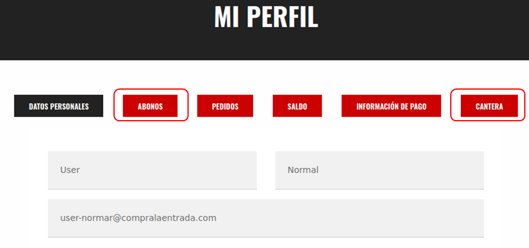
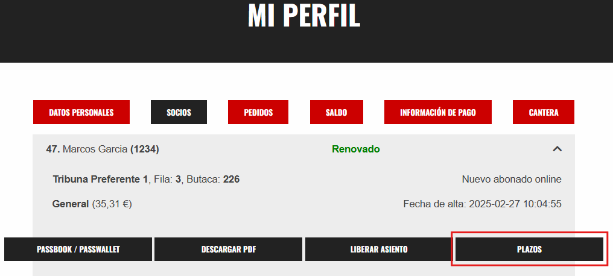
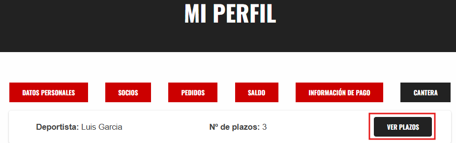
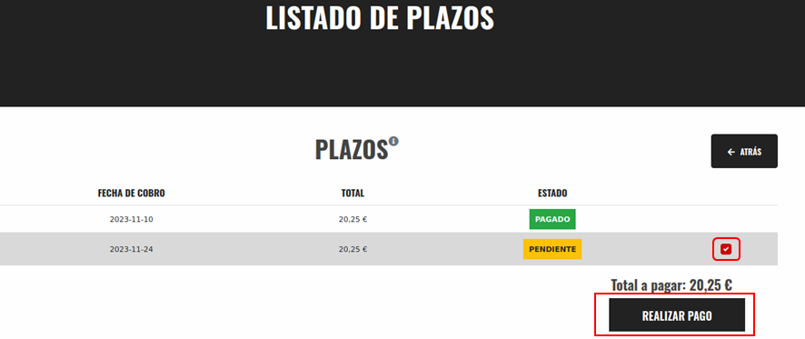
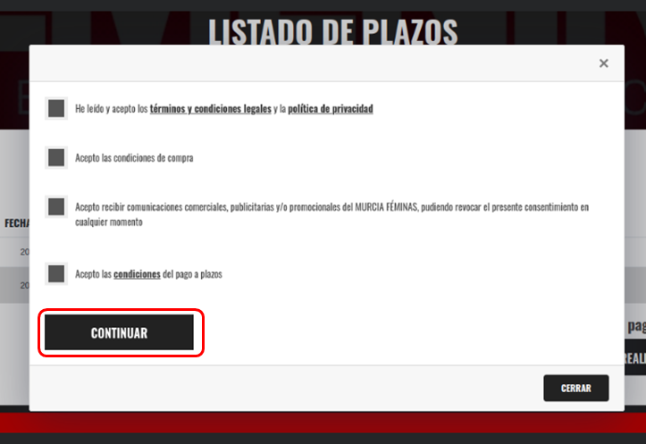
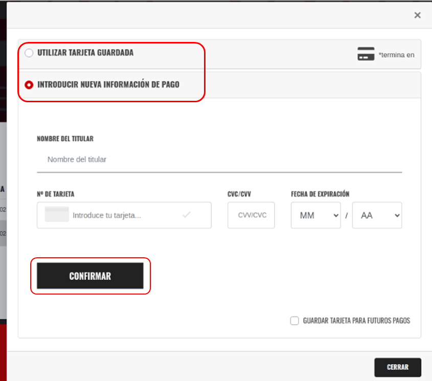
CAMBIAR TARJETA DE PAGO
OPCION 1
Esta opción es válida si tiene algún plazo pendiente por pagar.
- Deberá a ingresar a su perfil y realizar el procedimiento normal para el pago de algún plazo pendiente, cuando este finalizando seleccione la opción INTRODUCIR NUEVA INFORMACION DE PAGO, rellenar con la información de la nueva tarjeta, presionar en GUARDAR TARJETA PARA FUTUROS PAGOS y finalmente en CONFIRMAR.
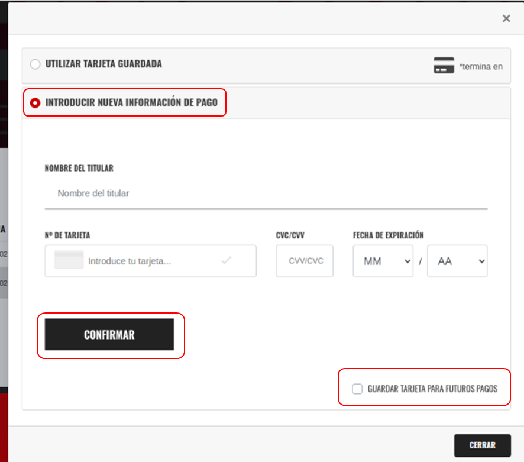
OPCION 2
- Ingrese a su perfil. Una vez dentro del perfil presionar en la opción INFORMACION DE PAGO – EDITAR.
- En la página emergente presiona en CONTINUAR.
- En la página emergente introduce los datos de la nueva tarjeta luego presione en CONFIRMAR.
- Ingrese la clave y presione en FIRMAR. Al confirmar el pago se guardarán los cambios.
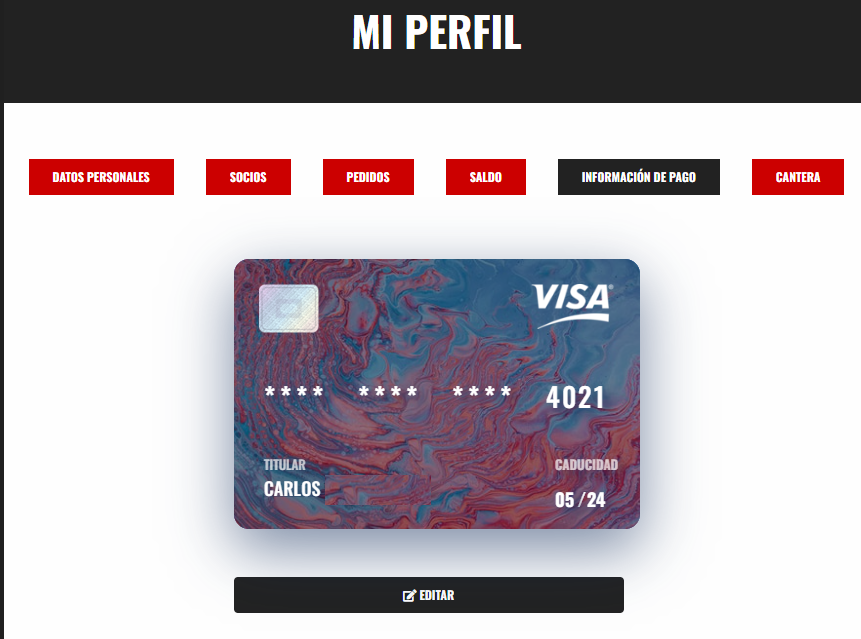
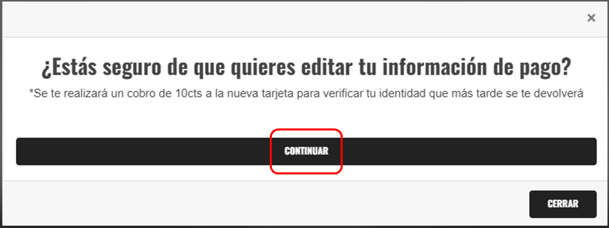
IMPORTANTE: Para realizar el cambio de tarjeta se debe realizar un pago seguro para que confirmar identidad y quede guardado, por lo tanto, se hará el cobro de 10CTS de los cuales se realizara una DEVOLUCION AUTOMATICA.
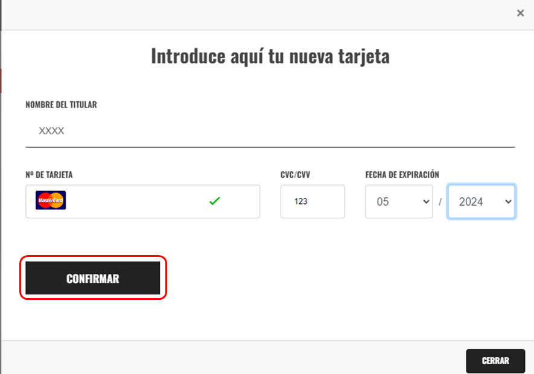
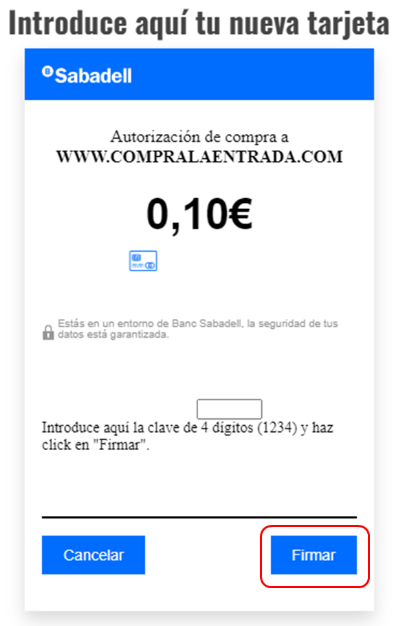
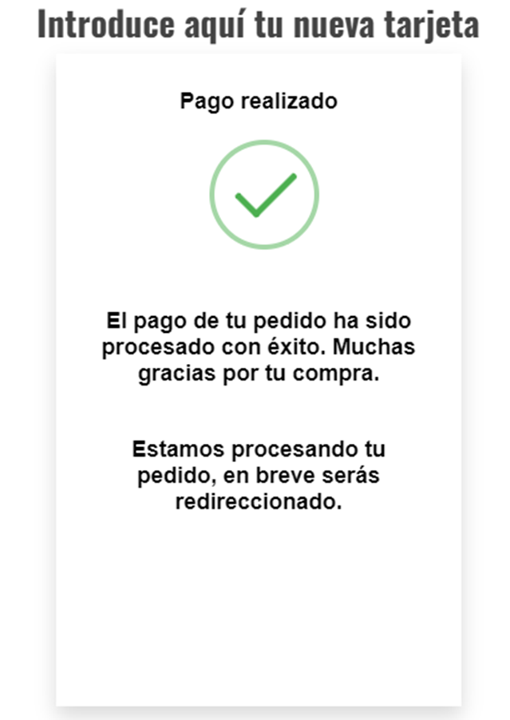